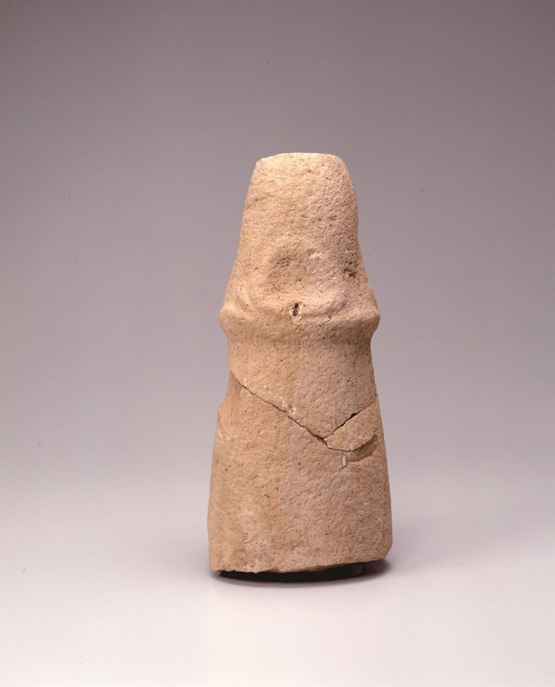
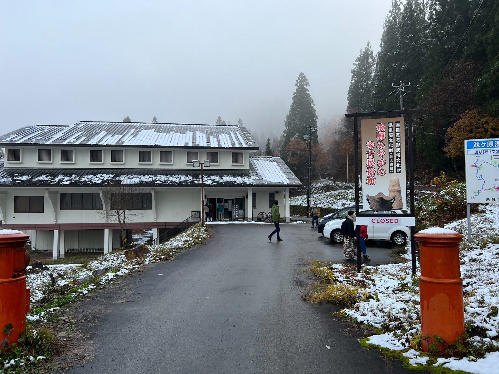
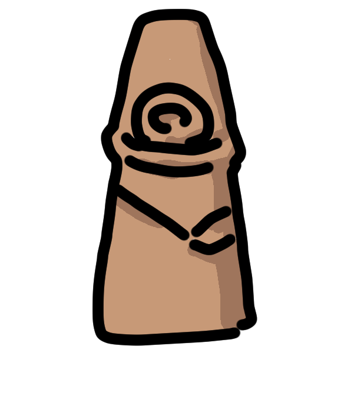
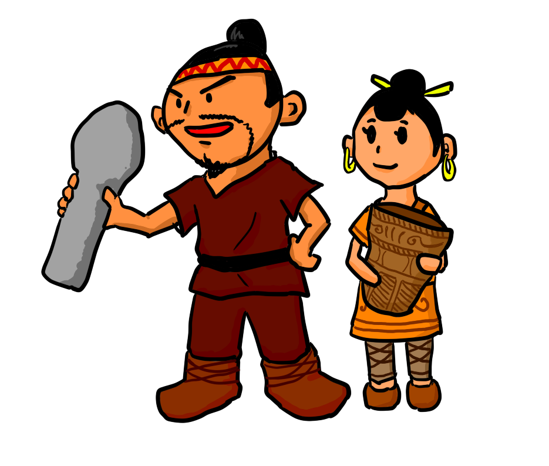
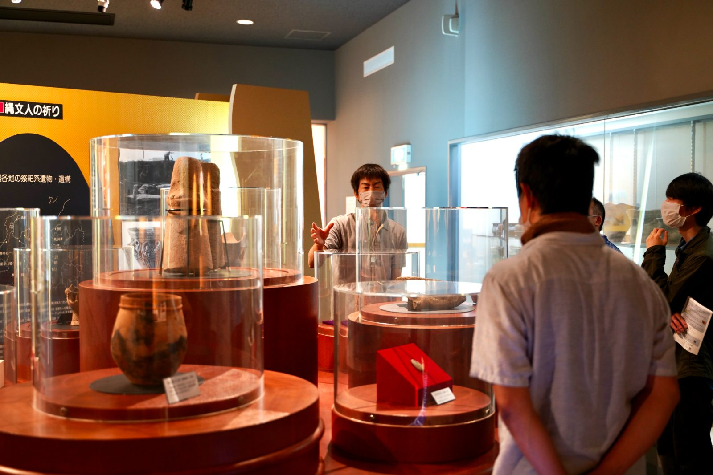
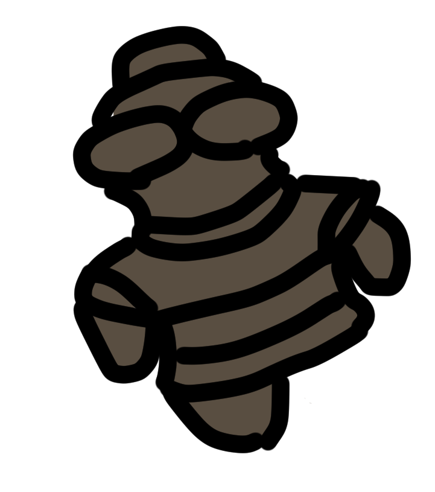
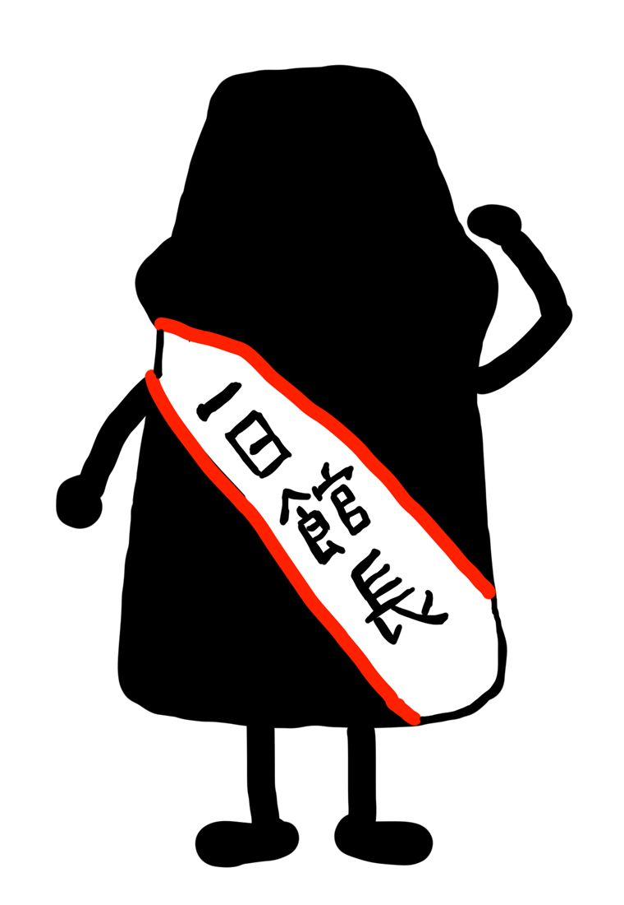
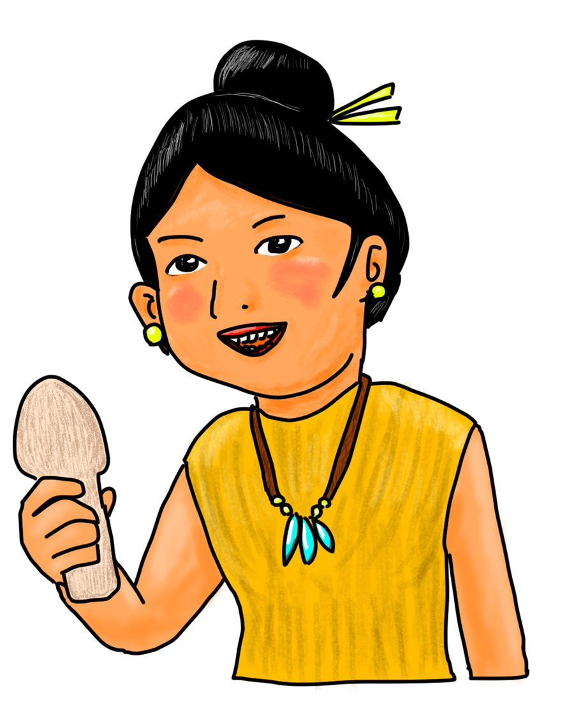
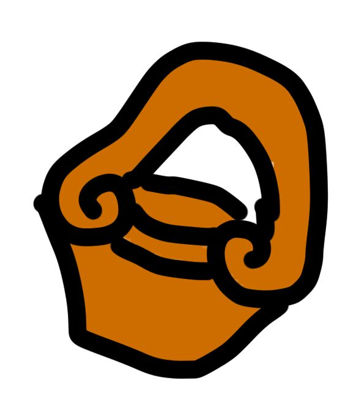

石棒で
博物館を
サステナブルに。
石棒をはじめとした文化財の活用を通じて、未来の新しいミュージアムの姿を創り出す。飛騨市や日本全国、そして世界の人に幸せを届ける。

ABOUT US
石棒クラブとは
石棒クラブは2019年3月に岐阜県飛騨市で誕生したプロジェクトです。
石棒の聖地である飛騨みやがわ考古民俗館という場所を舞台としていかにして関係人口を増やしていけるかという地方創生のチャレンジングな試みに挑戦しています。
更には飛騨市なりに小規模ミュージアムのあり方を示すことを目指しています。
Mission / Vision / Value

石棒とは
男根を模したと考えられている縄文時代の石器です。子孫繁栄など様々な幸せを願ったり祭祀などに使われていたと考えられていますが、真実は誰にもわかりません。
続きを読む私たち石棒クラブが生まれた飛騨市には、全国屈指のなんと1,000本以上の石棒が出土した遺跡があり、石棒研究の世界では「聖地」とされています。
活動内容

コミュニケーション
SNS、note、YouTube、ラジオ。石棒とミュージアムの話を、届く形で発信し続けています。
イベント
上映会、撮影ボランティア、バックヤードツアー。オンラインオフライン問わず企画・運営。

もっと、石棒。




イラスト集
石棒くんも、縄文の人びとも、土器も。はっしーさんのイラストをまとめました。
イラスト集を見るMaking museums sustainable through sekibo.
Sekibo Club is a project born in March 2019 in Hida City, Gifu Prefecture. Working from the Hida Miyagawa Museum of Archaeology and Folklore — a sacred site of sekibo — we take on the challenge of regional revitalisation by growing the community of people connected to the museum, and of showing what a small museum can be.
Sekibo are stone rods of the Jomon period, thought to be modelled on the phallus. They are believed to have been used in rituals and in prayers for prosperity and descendants, though no one knows the truth. Most settlements yield only a few; Hida City has a site with over 1,000.
Social media, note, YouTube and a radio show, all about sekibo and museums.
3D scanning of sekibo since May 2019, published on Sketchfab and used for AR and 3D printing.
Screenings, photography volunteering and backyard tours, online and off.
Five free browser games about sekibo, from a ramshackle RPG to a five-minute stone-carving simulator, with an artefact-hunting app in the works. See them all.